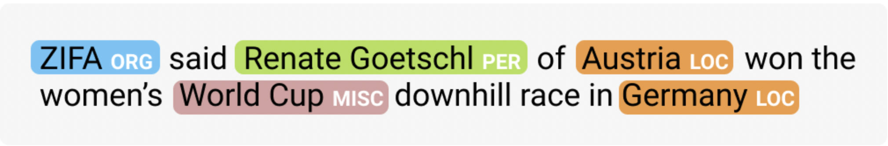

Natural Language Processing
Throughout my time at Cornell University, I have implemented several natural language processing models.
Here are some examples:
Named Entity Recognition
I implemented the following tags to identify and tag named entities in a document:

- Hidden Markov Model
- Unkown Word Handeling
- Viterbi Algorithm
- Maximum Entropy Markov Model
- Feed-Forward Neural Network
- Recurrent Neural Network
Semantic Role Labeling
The following models were used to perform semantic role labeling on a text:
- Long Short-Term Memory Model
- Encoder-Decoder Model